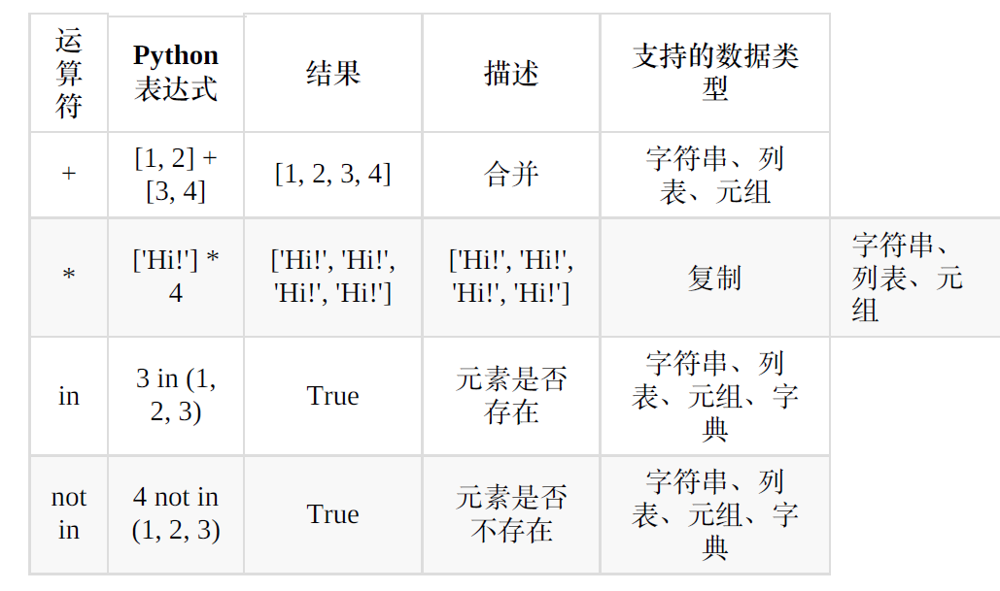
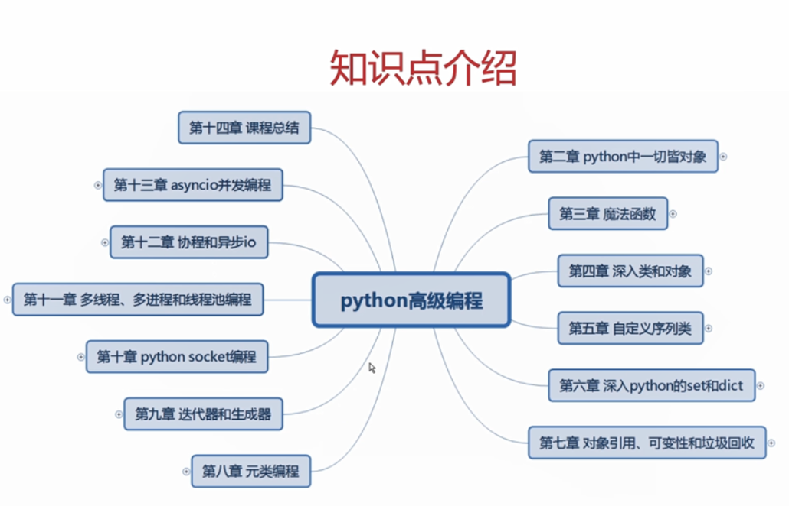
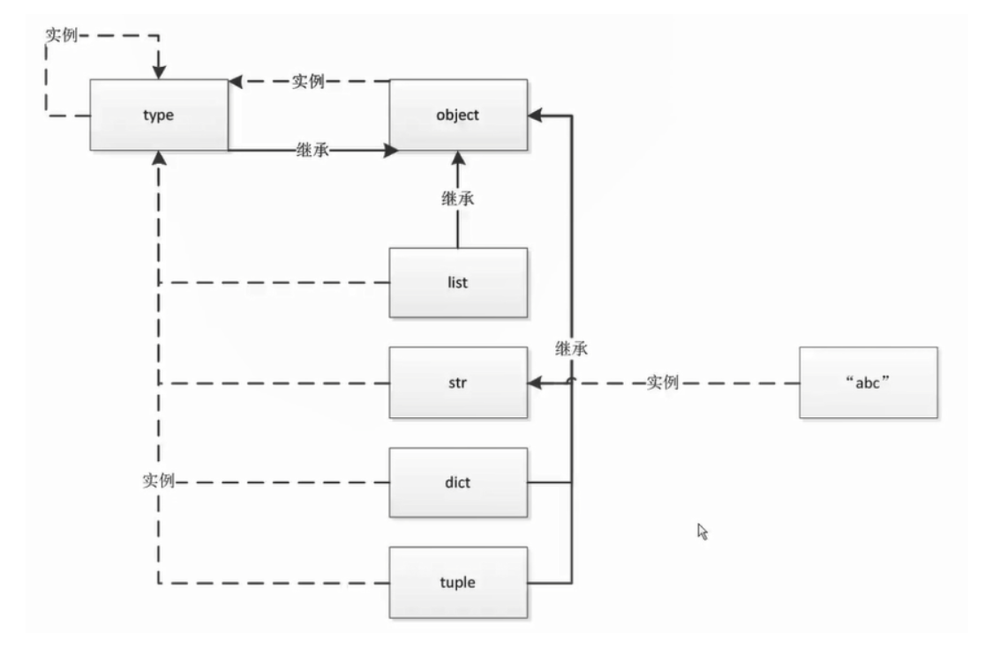
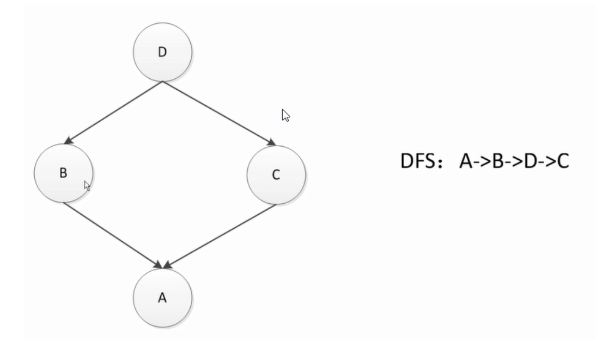
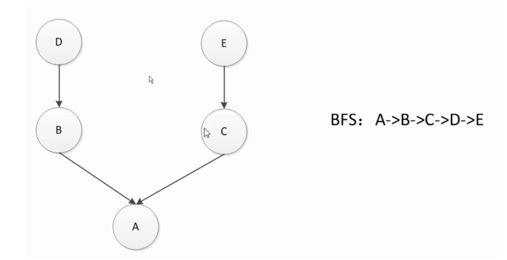
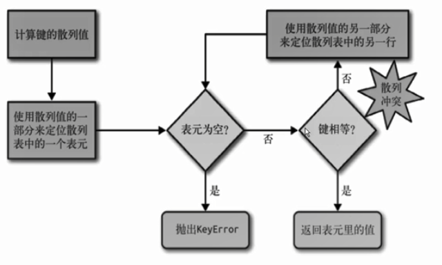

python学习笔记
基础语法
语法

有序序列：列表、字符串
无序序列：set、
- 因为集合是无序的，所以当集合中存在两个同样的元素的时候，Python 只会保存其中的一个（唯一性）；
- 同时为了确保其中不包含同样的元素，集合中放入的元素只能是不可变的对象（确定性）。
python 模块载入
- 为了提高效率，Python 只会载入模块一次，已经载入的模块再次载入时，Python 并不会真正执行载入操作，哪怕模块的内容已经改变。
- 需要重新导入模块时，可以使用 reload 强制重新载入它，例如：
1 | from imp import reload |
删除之前生成的文件：
1 | import os |
捕捉所有异常
- 将except 的值改成 Exception 类，来捕获所有的异常
try/except else
- try/except 块有一个可选的关键词 else。
- 如果使用这个子句，那么必须放在所有的 except 子句之后。else 子句将在 try 子句没有发生任何异常的时候执行。
finally
- try/except 块还有一个可选的关键词 finally。
- 不管 try 块有没有异常， finally 块的内容总是会被执行，而且会在抛出异常前执行，因此可以用来作为安全保证，比如确保打开的文件被关闭。
with 方法
事实上，Python 提供了更安全的方法，当 with 块的内容结束后，Python 会自动调用它的close 方法，确保读写的安全。
字符串，列表，元组可以切片
- 字典可以用下标访问，但是要使用key而不是数字访问所以不能切片。
- 集合和数字不能用下标访问，所以不能切片。
print(‘* ‘, end = ‘’) #不换行
- 包含end=’’作为print()的一个参数，会使该函数关闭“在输出中自动包含换行”的默认行为。
- 其原理是：为end传递一个空字符串，这样print函数不会在字符串末尾添加一个换行符，而是添加一个空字符串。
循环中的else 语句
- 与 if 一样， while 和 for 循环后面也可以跟着 else 语句。
- 当循环正常结束时，循环条件不满足， else 被执行；
- 当循环被 break 结束时，循环条件仍然满足， else 不执行。
运算符
1 算术运算符
- 加减乘除
- 取整除：//
- 取余：%
- 指数：**
2 赋值运算符
- 多变量赋值：num1, num2, num3 = 100, 100, ‘hello’
3 注释
- 单行注释用 # ，多行注释用’‘’ 三个引号‘’‘
可迭代类型
继承了collections模块的Iterable类型的对象都是可迭代的。
1 | from collections import Iterable |
int 常用语法
1 常用数据类型转换
- int(x)：将X转换成一个整数
- float(x)：将x转换成一个浮点数
- str(x)：将对象x转换为字符串
- eval(str)：将字符串str转换为原本的类型
- tuple(s)：将序列s转换为一个元组
- list(s)：将序列x转换为一个列表
str 常用语法
1 取下标和切片
切片是指对操作的对象截取其中一部分的操作。字符串、列表、元组都支持切片操作。
切片的语法：[起始:结束:步长]
逆序输出字符串：
1 | myStr = 'abcdefg' |
2 find && rfind
find ：检测 str 是否包含在 mystr中，如果是返回开始的索引值，否则返回-1。
rfind：类似于 find()函数，不过是从右边开始查找
1 | mystr.find(str, start=0, end=len(mystr)) |
3 index && rindex
index ：跟find()方法一样，只不过如果str不在 mystr中会报一个异常
rindex：类似于 index()，不过是从右边开始.
1 | mystr.index(str, start=0, end=len(mystr)) |
4 **isalpha **&& isdigit && isalnum && isspace
isalpha ：如果 mystr 所有字符都是字母 则返回 True,否则返回 False
isdigit：如果 mystr 只包含数字则返回 True，否则返回 False
isalnum：如果 mystr 所有字符都是字母或数字则返回 True,否则返回 False
isspace：如果 mystr 中只包含空格，则返回 True，否则返回 False
1 | mystr.isalpha() |
5 join：连接
mystr 中每个元素后面插入str,构造出一个新的字符串
1 | str.join(mystr) |
s.join(sequence) 的作用是以 s 为连接符将序列 sequence 中的元素连接起来，并返回连接后得到的新字符串。
1 | s = ' ' |
6 replace
把 mystr 中所有的 str1 替换成 str2,如果 count 指定，则替换不超过 count 次
1 | mystr.replace(str1, str2, mystr.count(str1))# 默认替换所有 |
7 strip && lstrip && rstrip
strip ：删除mystr字符串两端的空白字符
lstrip ：删除 mystr 左边的空白字符
rstrip：删除 mystr 字符串末尾的空白字符
1 | mystr.strip() |
8 title && capitalize
title() ：把字符串的每个单词首字母大写
**capitalize()**：把字符串的第一个字符大写
1 | mystr.title() |
9 count
返回 str在start和end之间 在 mystr里面出现的次数
1 | mystr.count(str, start=0, end=len(mystr)) |
10 split
以 str 为分隔符切片 mystr，如果 maxsplit有指定值，则仅分隔 maxsplit 个子字符串
1 | mystr.split(str=" ", maxsplit) |
11 **startswith ** && endswith
**startswith **：检查字符串是否是以 hello 开头, 是则返回 True，否则返回 False。
endswith：检查字符串是否以obj结束，如果是返回True,否则返回 False.
1 | mystr.startswith(hello) |
12 **lower **&& upper
**lower **：转换 mystr 中所有大写字符为小写、
upper：转换 mystr 中的小写字母为大写
1 | mystr.lower() |
13 ljust && rjust && center
ljust：返回一个原字符串左对齐,并使用空格填充至长度 width 的新字符串
rjust：返回一个原字符串右对齐,并使用空格填充至长度 width 的新字符串
center：返回一个原字符串居中,并使用空格填充至长度 width 的新字符串
1 | mystr.ljust(width) |
14 **partition **&& rpartition
**partition **：把mystr以str分割成三部分,str前，str和str后
rpartition：类似于 partition()函数,不过是从右边开始.
1 | mystr.partition(str) |
15 splitlines
按照行分隔，返回一个包含各行作为元素的列表
1 | mystr.splitlines() |
字典
1 查找
1 | 1 get方法 |
2 删除元素
- del
- clear（）
1 | info = {'name':'abc', 'sex':'f', 'address':'shanghai'} |
列表
1 长度、加法、乘法
1 | 1 长度：用 len 查看列表长度 |
2 添加元素
1 | 1 append 每次只添加一个元素，并不会因为这个元素是序列而将其展开： |
3 查找
1 | 1 index(ob) 返回列表中元素 ob 第一次出现的索引位置，如果 ob 不在 l 中会报错。 |
4 删除元素
- del：根据下标进行删除
- pop：删除最后一个元素
- remove：根据元素的值进行删除
5 列表生成式
1 | 请写出一段 Python 代码实现分组一个 list 里面的元素， |
6 排序
sort()：默认从从小到大，参数reverse=True可改为倒序，有大到小。
reverse()：逆序 等价于：sort(reverse=True)
元组
tuple一旦初始化就不能修改。因为tuple不可变，所以代码更安全。
1 | classmates = ('Michael', 'Bob', "Tracy") |
函数
1 | def func(): |
函数参数
- 位置参数
- 默认参数
- 可变参数
- 命名关键字参数
1 | def calc(*numbers): |
对于任意函数，都可以通过类似func(*args, **kw)的形式调用它，无论它的参数是如何定义的。
局部变量
- 局部变量：函数内部的变量
- 当局部变量和全局变量重名时，函数内部优先使用局部变量
- 通过global将局部变量绑定到全局变量，可以在函数中修改全局变量。
返回函数
1 | def lazy_sum(*args): |
闭包
- 返回的函数中引用了局部变量的函数就是闭包。
- 返回函数不要引用任何循环变量、或者后续会发生变化的变量。
匿名函数
1 | f = lambda x: x*x |
偏函数
1 | import functools |
functools.partial的作用就是把一个函数的某些参数给固定住，返回一个新的函数。
生成器
当一个巨大的列表中的大部分元素都不是必备的时候，白白浪费了空间，可以使用生成器（generator）来存储算法，避免大量空间的使用。
generator是可迭代对象
generator创建方法1：类似于列表生成式
1 | # 创建生成器 |
generator创建方法2：如果一个函数定义中包含了yield关键字，该函数就是一个generator。
1 | def fib(max): |
迭代器
可以直接使用for循环的数据类型有：
- 集合数据类型：list、tuple、dict、set、str等
- 生成器、生成器函数
这些可直接作用于for循环的对象就是可迭代对象：Iterable
可以被next()函数调用并不断返回下一个值的对象称为迭代器：Iterator
1 | from collections import Iterable |
生成器都是Iterator对象，但list、dict、str虽然是可迭代对象，却不是迭代器。
可以通过iter()函数将list、dict、str等Iterable变成Iterator。
小结
- 凡是可用作for循环的对象都是Iterable类型；
- 凡是可用作next()函数的对象都是Iterator类型，他们表示一个惰性计算的序列。
- 集合数据类型可以通过iter() 函数获得一个Iterator对象。
装饰器
在代码运行期间动态增加功能的方式，称为装饰器Decorator
1 | def log(func): |
该log函数接收一个函数作为参数，并返回函数，是一个装饰器。可用@语法替代。
类
python 的类里提供的，两个下划线开始，两个下划线结束的方法，就是魔法方法。
__init__()方法
创建对象时自动调用。
__str__() 方法
该方法只有一个self参数，返回要显示的数据，重写了该方法的类可以直接print()其事例，打印的结果是__str__()方法返回的数据。
通常通过__str__()方法来打印对象的描述信息。
__del__()方法
当对象被删除时，默认调用。
继承
- 可以单继承和多继承。
- 多继承的多个父类中有同名的属性和方法，则默认使用第一个父类的属性和方法。
多态
python是弱类型，无论参数是什么，都能传对象指向它。
类属性和实例属性
1 | class People(object): |
类方法和静态方法
1 | class People(object): |
总结：
- 类方法的第一个参数是类对象cls，那么通过cls引用的必定是类对象的属性和方法。
- 实例方法的第一个参数是实例对象self，self既可以引用类属性，也可以引用实例属性，实例属性优先级更高；
- 静态方法中不需要额外定义参数。
new方法
1 | class A(object): |
- new至少要一个参数cls，代表要实例化的类。
- new必须要有返回值，返回实例化出来的实例。
单例模式
1 | class Singleton(object): |
__slots__限制class实例添加属性
1 | class Student(object): |
@property
@property 装饰器负责把一个方法变成属性。
1 | class Student(object): |
枚举类
1 | from enum import Enum, unique |
模块
sys模块
1 | import sys |
argv至少有一个元素，因为第一个参数永远是该.py文件的文件名。
- 运行
python hello.py获得的sys.argv就是['hello.py'] - 运行
python hello.py Jack获得的sys.argv就是['hello.py', 'Jack']
sys.path
python解释器搜索的路径：sys.path
添加搜索目录：sys.path.append('D:\\AI\\pytorch')
文件读写
1 | # 1、读文件 |
操作文件和目录
1 | import os |
序列化
使用pickle模块来实现序列化
pickle.dumps()：序列化pickle.loads()：反序列化
1 | import pickle |
高级语法
多进程
1. multiprocessing
1 | from multiprocessing import Process |
2. Pool
如果要启动大量的子进程，可以用进程池的方式批量创建子进程。
1 | from multiprocessing import Pool |
3 进程间通信
通过Queue、Pipes来实现
多线程
1 | import time, threading |
Lock()
1 | balance = 0 |
在python中，可以使用多线程，但是不能有效的利用多核。因为有一个全局的解释器锁GIL，把所有线程的执行代码都给上了锁，所以，多线程在Python中只能交替执行。
datetime
1 | from datetime import datetime |
collections
namedtupledequedefaultdictOrderedDictCounter
python高级编程
1、总览

2、Python中一切皆对象
2.1动态语言和静态语言的区别
- python的面向对象更彻底
- Python中class也是对象, 函数也是对象
- Python中的代码和模块也是对象
2.2函数和类也是对象,属于python的一等公民
- 赋值给一个变量
- 可以添加到集合对象中
- 可以作为参数传递给函数
- 可以当做函数的返回值
对类进行实例化的时候返回的是一个类的对象
2.3type、object和class之间的关系
type的两种用法
- 生成一个类
- 返回一个对象的类型

type->int->1
- type->class->obj
1 | # 1是通过int这个类实例化的对象, int是通过type这个类实例化的对象 |
2.4python中的内置类型
python中对象的三个特征
身份
- 对象在内存中的地址,可以通过id去查看
类型
- int类型、字符串类型…
值
a = 1, 1是指这个对象的值, 1会被python的int类型进行封装, 然后使用a指向1这个对象
python中的常见内置类型
- None(全局只有一个)
1 | a = None |
- 数值
1 | int |
- 迭代类型
- 序列类型
1 | list |
- 映射(dict)
- 集合
1 | set |
- 上下文管理类型(with)
- 其他
1 | 模块类型 |
3、魔法函数
3.1什么是魔法函数?
- Python里面的魔法函数，是以双下划线开头和结尾
- 魔法函数不依赖任何类，并且可以随时调用
- 一旦类里面加上一些特定的魔法函数，整个类就被附加了一些特定的功能.
- 魔法函数定义了我们不需要显式的调用它，Python解释器自己会知道什么情况下会调用，我们在使用相应的语法的时候就会自动调用。
- 魔法函数和本身的类没有关系，和类的父类，object也没有关系。魔法函数可以写到任意一个类中，跟继不继承没有必然的关系。
3.2实例
- for循环的是可迭代对象, 首先通过__iter__得到一个迭代器, 然后不断调用迭代器的__next__, 但是如果对象没有实现 __iter__或__next__迭代器协议，Python的解释器就会去寻找__getitem__来迭代对象，如果连__getitem__都没有定义，这解释器就会报对象不是可迭代对象的错误.
- 魔法函数是能影响到语法本身的, 本来company是无法进行切片操作, 但是由于实现了__getitem__, 所以在python的语法上我们可以对实例化的对象进行切片操作.(列表也是list这个类实例化得到的一个对象)
1 | class Company(object): |
3.3常用魔法函数(非数学运算类型)
字符串表示
- repr
- str
集合序列相关
- len
- getitem
- setitem
- delitem
- contains
迭代相关
- iter
- next
可调用
- call
with上下文管理器
- enter
- exit
数值转换
- abs
- bool
- int
- float
- hash
- index
元类相关
- new
- init
属性相关
- getattr
- setattr
- getattribute
- setattribute
- dir
属性描述符
- get
- set
- delete
协程
- await
- aiter
- anext
- aenter
- aexit
3.4常用魔法函数(数学运算类型)
一元运算符
- __neg__（-）
- __pos__（+）
- abs
二元运算符
- lt(<)
- le <=
- eq ==
- ne !=
- gt >
- ge >=
算术运算符
- add +
- sub -
- mul *
- truediv /
- floordiv //
- mod %
- divmod 或 divmod()
- pow 或 ** 或 pow()
- round 或 round()
反向算术运算符
- radd
- rsub
- rmul
- rtruediv
- rfloordiv
- rmod
- rdivmod
- rpow
增量赋值算术运算符
- iadd
- isub
- imul
- itruediv
- ifloordiv
- imod
- ipow
位运算符
- invert ~
- lshift <<
- rshift >>
- and &
- or |
- xor ^
反向位运算符
- rlshift
- rrshift
- rand
- rxor
- ror
增量赋值位运算符
- ilshift
- irshift
- iand
- ixor
- ior
字符串表示
- str
在打印一个实例化对象的时候, python默认会调用str(对象), 对应的魔法函数是__str__
- repr
__repr__是在开发模式下调用的
1 | class Company(object): |
3.5len函数
之前提到len函数式会调用对象的__len__, 如果是使用遍历的方式求长度那么效率会很低, 但是在求python内置类型的长度比如len(list)、len(dict)、len(set)等的时候会很快, 因为在cpython中的list、dict、set等是通过c语言实现的, 在其内部会维护一个数据表示长度,所以就不需要进行遍历,能大大提高效率, 所以尽量使用python原生的数据类型。
4、深入类和对象
4.1鸭子类型和多态
鸭子类型
当看到一只鸟走起来像鸭子、游泳起来像鸭子、叫起来也像鸭子, 那么这只鸟就可以被称为鸭子.
1 | class Cat(object): |
列表的extend
list.extend() 因为传入的只需要是iterable类型即可, 所以list可以扩展tuple、set等都可以. 或者我们实现一个类可以迭代,也可以放到extend中.
1 | class Company(object): |
我们在几个对象中都实现了某一个方法名, 这些类我们就可以通用, 比如上面的say和__getitem__, 而魔法函数也是利用的python的鸭子类型, 只要实现了__getitem__就可迭代, 就可以传入extend中.
4.2抽象基类(abc模块)
抽象基类
- 抽象基类是一个虚拟的类, 相当于一个模板, 定义一些方法, 所有继承这个基类的类必须覆盖抽象基类里面的方法
- 抽象基类是无法用来实例化的
为什么要有抽象基类
因为python是基于鸭子类型的, 所以其实只要实现某些方法就可以了, 那为什么还要抽象基类呢?
- 第一种用法:我们去检查某个类是否有某一种方法
某些情况之下希望判定某个对象的类型, 可以使用hasattr判断是否实现某方法或者使用isinstance(推荐)去判断一个类是否是指定的类型, Sized就是一个实现__len__的抽象基类.
- 第二种用法: 强制某个子类必须实现某些方法
1 | # 模拟抽象基类, 只有在调用set方法的时候才会抛出异常 |
collection.abc模块
在这个模块中定义了很多通用的抽象基类, 比如Sized. 但是这些抽象基类定义出来并不是用来继承的, 更多的是让我们理解接口的一些定义. 推荐使用鸭子类型或者多继承(Mixin)实现, 而少用抽象基类.
1 | __all__ = ["Awaitable", "Coroutine", |
声明抽象基类
- metaclass = abc.ABCMeta
- @abc.abstractmethod
4.3isinstance和type的区别
1 | class A: |
4.4类变量和实例变量
1 | class A: |
4.5类和实例属性的查找顺序—mro查找
MRO算法
为什么不单纯使用深度优先或者广度优先
- 深度优先搜寻
查找顺序是A->B->D->C, 但是如果C重载了D的某个方法(B没有重载该方法), 由于深度优先所以将会使用D中的方法, 这是不合理的

- 广度优先
查找顺序是A->B->C->D->E, 由于优先级关系, B和D的优先级高于C, 但是如果C和D中定义了同一个方法, 由于广度优先所以将会使用C中的方法, 这是不合理的

C3算法
1 | class D: |
1 | class D: |
- MRO是一个有序列表L，在类被创建时就计算出来。
- 通用计算公式为:
mro(Child(Base1，Base2)) = [ Child ] + merge( mro(Base1), mro(Base2), [ Base1, Base2] ) （其中Child继承自Base1, Base2）
- 如果继承至一个基类：class B(A). 这时B的mro序列为:
1 | mro( B ) = mro( B(A) ) |
- 如果继承至多个基类：class B(A1, A2, A3 …). 这时B的mro序列
1 | mro(B) = mro( B(A1, A2, A3 …) ) |
计算结果为列表，列表中至少有一个元素即类自己，如上述示例[A1,A2,A3]。merge操作是C3算法的核心。
表头：
列表的第一个元素表尾：
列表中表头以外的元素集合（可以为空）
merge操作示例：
1 | 如计算merge( [E,O], [C,E,F,O], [C] ) |
4.6类方法、静态方法和实例方法
实例方法
- 可以访问实例变量和类变量
- 只能实例对象调用
静态方法
- @staticmethod
- 静态方法是不可以访问实例变量或类变量,不会主动传入self,传入什么参数才能获取到什么参数.
- 可通过实例对象或类对象调用
类方法
- @classmethod
- 类方法只能访问类变量，不能访问实例变量
- 可通过实例对象或类对象调用
- 需要传入cls参数, cls参数指向的是一开始定义的类对象（不是实例对象）
对比
- 类方法无须创建实例对象调用，所以类方法的调用较实例方法更为灵活
- 静态方法有点像附属于类对象的“工具”, 将对象的相关处理逻辑“束缚”在对象体内，这样封装得会更好些。
- 实例方法只能通过实例对象调用；类方法和静态方法可以通过类对象或者实例对象调用，如果是使用实例对象调用的类方法或静态方法，最终都会转而通过类对象调用。
- 实例方法使用最多，可以直接处理实例对象的逻辑；类方法不需要创建实例对象，直接处理类对象的逻辑；静态方法将与类对象相关的某些逻辑抽离出来，不仅可以用于测试，还能便于代码后期维护。
- 实例方法和类方法，能够改变实例对象或类对象的状态，而静态方法不能。
4.7数据封装和私有属性
私有属性
1 | # 类中所有双下划线开头的名称如__x都会在类定义时自动变形成：_类名__x的形式 |
4.8python对象的自省机制.
自省是通过一定的机制查询到对象的内部机制, 编程中，自省的能力：检查某些事物以确定它是什么，它知道什么以及它能做什么。
- __dict__返回的是字典, dir返回的是列表
- __dict__查看对象的所有属性(可写属性), dir查看类本身的所有属性。
1 | class Person: |
__bases__和issubclass
1 | class A: |
4.9super真的是调用父类吗
super真正调用的是什么?
==super真正调用的是MRO中的下一个类的函数==
1 | class A: |
4.10mixin继承案例-django rest framework
Mixin类
- Python是支持多继承的。我们可以利用 Python 的这种特性，实现一种叫做 Mixin 的类
- Mixin 类只包含了一组特定的函数集合，而我们将会将其与其他类进行混合，从而生成一个适用于实际需要的新类
Mixin模式特点
- Mixin类功能单一
- 不和基类关联，可以和任意基类组合， 基类可以不和mixin关联就能初始化成功
- 在mixin中不要使用super这种用法
4.11python中的with语句
上下文管理器
异常捕捉中的return
1 | def exe_try(): |
上下文管理器协议
- ==with语句后面的as得到的是__enter__方法的返回值==, 如果
__enter__返回1, 那么sample就等于1.
1 | class Sample: |
- 如果
__enter__没有返回值, 那么无法使用as.
1 | class Person: |
4.12 contextlib简化上下文管理器
contextmanager可以简化上下文管理器，不需要我们编写__enter__和__exit__函数。他给了我们一个机会，让我们把之前一个不是上下文管理器的类变成一个上下文管理器，而不需要我们去修改这个类的源代码.
其中的yield的作用，是中断当前函数执行流程，先去执行yield出去的部分的代码执行流程.
1 | import contextlib |
5、自定义序列类
5.1python中的序列分类
1 | # 存储数据类型区别 |
- 容器序列(可以放置任意类型数据)
- 扁平序列
5.2python中序列类型的abc继承关系
序列类型的协议
和容器相关的数据结构的抽象基类都在from collections import abc这个模块，我们打开from _collections_abc import all，在_collections_abc.py模块里面可以看到内容如下：p
1 | __all__ = ["Awaitable", "Coroutine", |
咱们只需要关注“Sequence”, “MutableSequence”, Sequence 是不可变序列类型，MutableSequence 是可变序列类型.
Sequence
Sequence 继承的类
1 | # 继承了两个类 Reversible, Collection |
Reversible是序列的翻转，例如ABC变成CBA
1 | class Collection(Sized, Iterable, Container): |
Sequence的所有魔法函数构成了序列的协议, 打开Sequence类我们可以看到里面重写了所继承的抽象基类的方法,包括__len__,__iter__和__contains__.
MutableSequence
MutableSequence是可变的序列, 他继承了Sequence并新加了一些特性. 如 setitem, delitem, insert, append, clear, reverse, extend, pop, remove, iadd等, 这些都是可变序列的特性.
1 | class MutableSequence(Sequence): |
5.3 list中extend方法区别
序列的+、+=和extend的区别
这三个都可以把list进行连接
- 区别一: + 和 +=占用空间不一样
1 | a=[1,2,3] |
- 区别二: + 两边的数据类型要一致
1 | a=[1,2,3] |
==原因是因为+=是调用MutableSequence中的__iadd__, 它是调用extend, 接收一个iterable并通过for循环append.==
- entend和append的区别
1 | a=[1,2,3] |
5.4 实现可切片的对象
切片神操作，你会多少?
首先先讲下切片的公式, 模式[start : end : step]
- start是切片的起始位置, 不填默认为0
- end是切片的截至位置, 不填默认为列表的长度
- step是切片的跨度, 也就是切片跳跃的长度，官方说法是步长，如果不指定值就是默认是1
切片取值
- 对列表进行切片操作是会返回一个新的列表
1 | alist=[1,2,3,4,5,6,7,8,9] |
切片赋值
alist[len(alist):]=[10] # 在尾部增加列表alist[:0]=[0] # 在开始位置前增加列表alist[2:2]=[3.3] # 在第3位置插入列表
1 | alist=[1,2,3,4,5,6,7,8,9] |
编写一个不可变的序列类
之前提到的Sequence就是一个不可变序列的抽象基类, 所以我们只要实现了它内部的魔法函数, 就能实现一个不可变的序列类.
1 | from collections import Sequence |
首先根据源码可知我们必须实现__getitem__和__len__, 我们来好好研究一下__getitem__这个魔法函数. 如果是group[1], 那么item是int(1), 如果group[:2], 那么item是一个slice(None, 2, None), 所以我们可以通过item进行切片返回.
1 | def __getitem__(self, item): |
但是如果想返回的还是Group对象:
1 | return Group(group_name='user',staffs = self.staffs[item]) |
但是Group直接写死了不好, 因为是通过group调用, 所以self指向group对象, 而且传入的是int的时候我们需要返回[]:
1 | def __getitem__(self, item): |
同理我们如果还需要实现其他功能:
1 | def __reversed__(self): |
5.5 bisect维护已排序序列
序列
- 首先需要有序列的概念, list只是序列的一种
bisect用于维护已排序序列
- 使用bisect插入数据会将数据按顺序排序(升序)
- bisect利用二分查找来维护排序序列
1 | import bisect |
其中默认插入是右边插入insort = insort_right
- 查找将会插入的位置
1 | inter_list = [1, 2, 3.0, 3, 4, 5, 6] |
其中默认插入是右边插入bisect = bisect_right
5.6 什么时候我们不该使用列表
array
前面在序列分类的时候提到了一种array类型, 它其实是C语言中的数组, 与list主要有如下区别:
- array只能存放指定的数据类型
- array的数据在内存中是连续的
- array的效率和性能会比list更高
1 | import array |
5.7 列表推导式、生成器表达式、字典推导式
- 简单的for循环都可以用推导式进行完成，性能高比较高，但是如果场景过于复杂就不要用，可读性要排在第一位.
1 | # 列表生成式的性能高于列表操作 |
6、深入python的set和dict
6.1 dict的abc继承关系
dict
通过抽象基类来理解python中dict的继承关系,
1 | __all__ = ["Awaitable", "Coroutine", |
dict其实是属于MutableMapping, 它继承Mapping, Mapping继承Collection, 里面包括__len__,__iter__, __contains__, 所以dict和序列有很多接近的地方.
a是一个dict对象, 它并不是继承了MutableMapping, 而是实现了MutableMapping中的方法和魔法函数.
1 | from collections.abc import Mapping, MutableMapping |
6.2 dict的常用方法
dict的常用操作
- clear：clear的功能是对dict的内容进行清除.没有任何的返回值
1 | a={"person1":{"Andy":30},"person12":{"Lady":45}} |
- 浅copy和深copy
- fromkeys：首先这是一个静态方法, 可以直接使用类名调用
1 | # known case |
1 | a=["person1","person2"] |
- get：解决key没有对应的value报错的问题
1 | print(a.get("person",{})) |
items, keys, values：取值
pop，popitem：删除并返回
setdefault：如果key存在使用get方法, 如果key不存在使用set方法
update：两个字典合并
1 | a={"person1":{"Andy":30},"person12":{"Lady":45}} |
6.3 dict的子类
UserDict
dict是一个类, 我们就可以尝试继承它:
1 | class My_dict(dict): |
发现值没有变化, 我们去查看dict的源码, 并没有实现__setitem__, 这个方法没有做任何处理，并不适用继承:
1 | def __setitem__(self, *args, **kwargs): # real signature unknown |
这个时候我们需要继承UserDict, 它是继承于MutableMapping:
1 | from collections import UserDict |
在UserDict的源码中是实现了:
1 | def __setitem__(self, key, item): self.data[key] = item |
所以如果需要继承dict, 我们应该去继承UserDict. 我们可以理解为dict是使用c语言去实现, 而UserDict是使用python语言去实现了一遍dict.
defaultdict
dict是属于MutableMapping的虚子类，虽然dict实现了MutableMapping定义的所有方法，但是是靠解释器内部实现的。他们两个的关系是通过register函数注册后“绑”到一起的。
因为python内置的dict类实际上没有继承MutableMapping类，C语言编写的内置类型怎么可能继承自python语言编写的抽象基类呢？检查下dict类的MRO方法解析列表，它的“真实”基类们就一清二楚了：
1 | dict.__mro__ |
那么为何通过函数检查dict，python又会告诉你“dict是MutableMapping的子类”呢？
1 | import collections |
因为python的抽象基类能够【注册虚拟子类】：在你import collections包时，该包的代码就已经执行了MutableMapping.register()方法，将dict注册为了自己的虚拟子类，从而可以通过函数检查。
defaultdict是dict的一个子类,
我们来看一下UserDict中的__getitem__的:
1 | def __getitem__(self, key): |
如果key不存在就查看有没有__missing__, 如果有就调用该方法, 而在defaultdict中重载了该方法.
1 | def __missing__(self, key): # real signature unknown; restored from __doc__ |
使用:
1 | from collections import defaultdict |
6.4 set和frozenset
set 和 frozenset的应用场景及区别
- set是集合，frozenset是不可变集合。
- set最大的特性是不重合，在去重的时候用的最多。
- set是无序的
- set的性能比较高, 因为他用到了哈希编码
1 | def __init__(self, seq=()): # known special case of set.__init__ |
set初始化是接收一个可迭代对象, 比如str, list, dict, tuple…
set的另一种初始化方式是{‘a’,’b’,’c’}
frozenset
不可变集合是无法修改的, 可以作为dict的key
1 | a={"a","b","c"} |
常用方法
- update 方法
1 | a=set("abc") |
- 集合运算(|，&，-)
1 | a=set("abc") |
原理是调用了相应的魔法函数
6.5 dict和set的实现原理
效率
dict查找的性能远远大于list
在list中查找元素时间会随着list的增大而增大
在dict中查找元素时间不会随着dict的增大而增大
哈希表
哈希表查找

- dict的key或者set的值都必须是可以hash的
- 不可变对象都是可hash的, str,fronzenset,tuple
- 自己实现的类使用魔法函数
__hash__实现哈希 - dict的内存花销大，但是查询速度快，自定义的对象或者python内部的对象都是用dict包装的
- dict的存储顺序和元素添加顺序有关
- 添加数据有可能改变已有数据的顺序, 最开始会申请内存, 然后随着数据的不断添加, 当剩余空间小于三分之一的时候会申请新的内存然后进行数据迁移, 这个时候存储顺序可能会发生改变.
7、对象引用、可变性和垃圾回收
7.1 python中的变量
- python是动态语言, 变量是没有类型的
- java中声明变量是需要指定类型, 然后虚拟机根据类型申请空间, 但是python的变量实质是指针(首先生成对象然后指针指向对象)
1 | # 不可变类型 |
7.2 ==和is的区别
- is也被叫做同一性运算符，这个运算符比较判断的是对象间的唯一身份标识，也就是id是否相同
- ==是利用魔法函数
__eq__, 用来比较判断两个对象的**value(值)**是否相等
7.3 del语句和垃圾回收
Python的垃圾回收机制
- 垃圾回收机制算法采用的是引用计数
1 | a=[1,2,3] # 声明变量后，引用计数 +1 |
当计数器保存的值为0的时候，也就是意味着没有任何指针指向这块存储。解释器开始清除这块没有任何指针的存储。
垃圾回收魔法函数
__del__可以添加该对象被垃圾回收时的逻辑.
1 | class A: |
7.4 一个经典的参数错误.
经典参数传递错误
传入int值
1 | def add(a,b): |
传入list
1 | def add(a,b): |
内部使用的是+=, 所以内存地址不变, 所以在执行a+=b的前后a指向的是同一个地址, 只不过地址里面的内容发生改变.
传入元组
1 | def add(a,b): |
总结
在传入参数为列表等可变序列时要注意传入参数有可能在函数内部被改变.
8、元类编程
8.1 property动态属性
模块的导入
1 | from datetime import date, datetime |
property装饰器(属性方法)
现在假如一个类有年龄属性, 我们需要设置值并能获取值
- 方法一: 在
__init__()中设置age, 但是问题是对于赋值无法添加处理或者校验
1 | class Student: |
- 方法二: 使用set_age和get_age
1 | class Student: |
为了让age更安全, 可以改成_age
- property就是实现了上面的set_age和get_age的作用
1 | class Student: |
最大特点
属性值可动态获取
8.2 __getattr__、__getattribute__魔法函数
__getattr__和__getattribute__的区别
优先进入__getattribute__(如果两个都实现了的话)
1 | class User: |
__getattr__： 当实例化对象调用属性不存在的时候调用
1 | class A: |
1 | class A: |
作用: 我们可以指定在找不到该属性的时候实现的操作, 比如修改查找的名称, 重新指定查找的区域等
__getattribute__
执行查找, 无条件进入该魔法函数, 即使所查找的属性不存在
8.3 属性描述符和属性查找过程.
属性描述符
前面提到的age在输入的时候需要校验, 实现是通过property的setter, 但是如果很多输入字段那么就要写很多重复的代码.这里就要用到属性描述符。
1 | # 一个对象只要实现__get__、__set__或者__delete__就是一个属性描述符对象 |
user.age的查找顺序
- 如果user是某个类的实例，那么
user.age（以及等价的getattr(user,’age’)） - 首先调用
__getattribute__, 如果在__getattribute__找不到属性就会抛出AttributeError - 如果类定义了
__getattr__方法，在抛出AttributeError的时候就会调用到__getattr__ - 而对于描述符
__get__的调用，则是发生在__getattribute__内部的。
user = User(), 那么user.age 顺序如下：
- 如果“age”是出现在User或其基类的
__dict__中，且age是data descriptor，那么调用其__get__方法 - 如果“age”出现在user(对象)的
__dict__中， 那么直接返回obj.__dict__[‘age’] - 如果“age”出现在User(类)或其基类的
__dict__中
如果age是non-data descriptor，那么调用其
__get__方法如果不是，返回
__dict__[‘age’]4.如果User有
__getattr__方法，调用__getattr__方法，否则
5.抛出AttributeError
- 类的静态函数、类函数、普通函数、全局变量以及一些内置的属性都是放在类.__dict__里的
- 对象.__dict__中存储了一些self.xxx的一些东西
1 | import numbers |
1 | class User: |
8.4 __new__和__init__的区别
__new__和__init__魔法函数区别
- __new__的功能是在生成对象之前所做的动作, 接受的参数是cls 类
- __init__是在对象生成之后完善对象的属性, 它接受的是self 对象
- 对象生成是在new里面return(返回一个对象)
1 | class User: |
在执行user = User()时, 首先调用User类中的__new__, 其中cls就是User类, 然后继承父类object的中__new__将创建并返回一个类对象, 然后再执行__init__完善对象属性.
8.5 自定义元类
创建类的方法
Type动态创建类
1 | Company=type（“类名称”，（继承的基类），{类的属性 }） |
元类就是创建类的类, 刚才的type就是一个元类
自定义元类
1 | # 控制User类实例化的过程 |
1 | class Foo(Bar): |
创建Foo会先寻找Foo中有__metaclass__这个属性吗？如果是，Python会在内存中通过__metaclass__创建一个名字为Foo的类对象。如果Python没有找到__metaclass__，它会继续在Bar（父类）中寻找__metaclass__属性，并尝试做和前面同样的操作。如果Python在任何父类中都找不到__metaclass__，它就会在模块层次中去寻找__metaclass__，并尝试做同样的操作。如果还是找不到__metaclass__,Python就会用内置的type来创建这个类对象。
- 之前写抽象接口就使用了metaclass=ABCMeta, 其实在ABCMeta里面就是重写了__new__方法. 然后再__new__里面检查被标记为@abstractmethod的方法有没有重载.
8.6 通过元类实现orm
- 创建类的时候对min_value, max_value等进行检查, 在
__init__中 - 对类赋值的时候对min_value, max_value等进行检查, 在
__get__中
1 | import numbers |